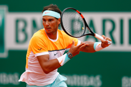
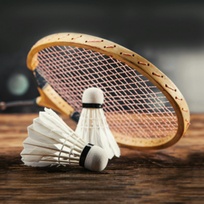

#NB: Kaggle requires phone verification to use the internet or a GPU. If you haven't done that yet, the cell below will fail
# This code is only here to check that your internet is enabled. It doesn't do anything else.
# Here's a help thread on getting your phone number verified: https://www.kaggle.com/product-feedback/135367
import socket,warnings
try:
socket.setdefaulttimeout(1) # Sets global timeout time of 1 sec, ie if socket operation is not complteted in 1 sec then error will be raised.
# if set to around 0.01 in colab server it give timeout error since the time is too less for socket operation.
socket.socket(socket.AF_INET, socket.SOCK_STREAM).connect(('1.1.1.1', 53)) # This will use AF_INET which is same as IPV4, SOCK_STREAM means TCP.
except socket.error as ex:
# print("Original exception :", ex)
raise Exception("STOP: No internet. Click '>|' in top right and set 'Internet' switch to on")
# We cached the error here but did not printed it where as we raise a custom Exception.
Is it a tennis?
::: {#cell-3 .cell _kg_hide-input=‘true’ _kg_hide-output=‘true’ execution=‘{“iopub.status.busy”:“2022-08-15T19:54:58.581817Z”,“iopub.execute_input”:“2022-08-15T19:54:58.582154Z”,“iopub.status.idle”:“2022-08-15T19:55:20.002673Z”,“shell.execute_reply.started”:“2022-08-15T19:54:58.58212Z”,“shell.execute_reply”:“2022-08-15T19:55:20.001747Z”}’ trusted=‘true’ outputId=‘0b4b8a64-b932-4861-e183-ca77133bd6c0’ execution_count=2}
# It's a good idea to ensure you're running the latest version of any libraries you need.
# `!pip install -Uqq <libraries>` upgrades to the latest version of <libraries>
# NB: You can safely ignore any warnings or errors pip spits out about running as root or incompatibilities
import os
iskaggle = os.environ.get('KAGGLE_KERNEL_RUN_TYPE', '') #if kernel run type is not found it will return second arguemnt
if iskaggle:
print("It is Kaggle !!")
!pip install -Uqq fastai # -Uqq refers to upgrade extra quitely
!pip install duckduckgo_search==6.2.6Collecting duckduckgo_search==6.2.6
Downloading duckduckgo_search-6.2.6-py3-none-any.whl.metadata (24 kB)
Requirement already satisfied: click>=8.1.7 in /usr/local/lib/python3.10/dist-packages (from duckduckgo_search==6.2.6) (8.1.7)
Collecting primp>=0.5.5 (from duckduckgo_search==6.2.6)
Downloading primp-0.5.5-cp38-abi3-manylinux_2_17_x86_64.manylinux2014_x86_64.whl.metadata (10 kB)
Downloading duckduckgo_search-6.2.6-py3-none-any.whl (27 kB)
Downloading primp-0.5.5-cp38-abi3-manylinux_2_17_x86_64.manylinux2014_x86_64.whl (3.0 MB)
━━━━━━━━━━━━━━━━━━━━━━━━━━━━━━━━━━━━━━━━ 0.0/3.0 MB ? eta -:--:-- ━━━━━━━━━━━━━━━━━━━━━━━━━━━━━━━━━━━━━━━╸ 3.0/3.0 MB 103.5 MB/s eta 0:00:01 ━━━━━━━━━━━━━━━━━━━━━━━━━━━━━━━━━━━━━━━━ 3.0/3.0 MB 60.6 MB/s eta 0:00:00
Installing collected packages: primp, duckduckgo_search
Successfully installed duckduckgo_search-6.2.6 primp-0.5.5:::
In 2015 the idea of creating a computer system that could recognise tenniss was considered so outrageously challenging that it was the basis of this XKCD joke:
But today, we can do exactly that, in just a few minutes, using entirely free resources!
The basic steps we’ll take are:
- Use DuckDuckGo to search for images of “tennis photos”
- Use DuckDuckGo to search for images of “badminton photos”
- Fine-tune a pretrained neural network to recognise these two groups
- Try running this model on a picture of a tennis and see if it works.
Step 1: Download images of tenniss and non-tenniss
::: {#cell-7 .cell _kg_hide-input=‘true’ execution=‘{“iopub.status.busy”:“2022-08-15T20:17:04.164811Z”,“iopub.execute_input”:“2022-08-15T20:17:04.165128Z”,“iopub.status.idle”:“2022-08-15T20:17:04.171Z”,“shell.execute_reply.started”:“2022-08-15T20:17:04.165074Z”,“shell.execute_reply”:“2022-08-15T20:17:04.170146Z”}’ trusted=‘true’ execution_count=3}
from duckduckgo_search import DDGS # previous function is depreciated this is the new one.
from fastcore.all import *
def search_images(term, max_images=30):
print(f"Searching for '{term}'")
return L(DDGS().images(term, max_results=max_images)).itemgot('image')
#L before just right to L is a list type in fastai, DDGS is object has a functino images with input term "term" and max_results argument giving number of images to give.
# from each item in item itemgot('image') will retrieve image key whose value is url:::
Let’s start by searching for a tennis photo and seeing what kind of result we get. We’ll start by getting URLs from a search:
#NB: `search_images` depends on duckduckgo.com, which doesn't always return correct responses.
# If you get a JSON error, just try running it again (it may take a couple of tries).
urls = search_images('tennis photos', max_images=1)
urls[0]Searching for 'tennis photos''https://images.wallpapersden.com/image/download/rafael-nadal-tennis-tennis-player_Z2ZrbmmUmZqaraWkpJRoZWVlrWdlZWU.jpg'…and then download a URL and take a look at it:
from fastdownload import download_url
dest = 'tennis.jpg'
download_url(urls[0], dest, show_progress=False)
from fastai.vision.all import *
im = Image.open(dest)
im.to_thumb(256,256)
Now let’s do the same with “badminton photos”:
download_url(search_images('badminton photos', max_images=1)[0], 'badminton.jpg', show_progress=False) # search image returns list of dict, hence we are accessing url in image key
Image.open('badminton.jpg').to_thumb(256,256)Searching for 'badminton photos'
Our searches seem to be giving reasonable results, so let’s grab a few examples of each of “tennis” and “badminton” photos, and save each group of photos to a different folder (I’m also trying to grab a range of lighting conditions here):
searches = 'badminton','tennis' # this is a tuple not list
path = Path('tennis_or_not') # thus function gives path which will be used further
print(type(path))<class 'pathlib.PosixPath'>from time import sleep
for o in searches:
dest = (path/o) # this will append the path with the catagory but the dest will still be pathlib object and not a string
dest.mkdir(exist_ok=True, parents=True) # since dest is pathlib obj we can use mkdir directly, by exist_ok=True it does not raise error when the directory already exists.
# parents=True will create any parent if needed
download_images(dest, urls=search_images(f'{o} photo'))
sleep(10) # Pause between searches to avoid over-loading server
download_images(dest, urls=search_images(f'{o} sun photo'))
sleep(10)
download_images(dest, urls=search_images(f'{o} shade photo'))
sleep(10)
resize_images(path/o, max_size=400, dest=path/o)Searching for 'badminton photo'
Searching for 'badminton sun photo'
Searching for 'badminton shade photo'
Searching for 'tennis photo'
Searching for 'tennis sun photo'
Searching for 'tennis shade photo'Step 2: Train our model
Some photos might not download correctly which could cause our model training to fail, so we’ll remove them:
failed = verify_images(get_image_files(path)) # verify function will check if for ach image is it a valid image format of not
failed.map(Path.unlink) # It image format is not value then then it is collected in failed list.
# .map will apply the Path.unlink function to all the failed images and delete the failed images
len(failed)9To train a model, we’ll need DataLoaders, which is an object that contains a training set (the images used to create a model) and a validation set (the images used to check the accuracy of a model – not used during training). In fastai we can create that easily using a DataBlock, and view sample images from it:
dls = DataBlock(
blocks=(ImageBlock, CategoryBlock),
get_items=get_image_files,
splitter=RandomSplitter(valid_pct=0.2, seed=42),
get_y=parent_label,
item_tfms=[Resize(192, method='squish')]
).dataloaders(path, bs=32)
dls.show_batch(max_n=6)
Here what each of the DataBlock parameters means:
blocks=(ImageBlock, CategoryBlock),The inputs to our model are images, and the outputs are categories (in this case, “tennis” or “badminton”).
get_items=get_image_files,To find all the inputs to our model, run the get_image_files function (which returns a list of all image files in a path).
splitter=RandomSplitter(valid_pct=0.2, seed=42),Split the data into training and validation sets randomly, using 20% of the data for the validation set.
get_y=parent_label,The labels (y values) is the name of the parent of each file (i.e. the name of the folder they’re in, which will be tennis or badminton).
item_tfms=[Resize(192, method='squish')]Before training, resize each image to 192x192 pixels by “squishing” it (as opposed to cropping it).
Now we’re ready to train our model. The fastest widely used computer vision model is resnet18. You can train this in a few minutes, even on a CPU! (On a GPU, it generally takes under 10 seconds…)
fastai comes with a helpful fine_tune() method which automatically uses best practices for fine tuning a pre-trained model, so we’ll use that.
learn = vision_learner(dls, resnet18, metrics=error_rate)
learn.fine_tune(10)| epoch | train_loss | valid_loss | error_rate | time |
|---|---|---|---|---|
| 0 | 1.435960 | 1.422994 | 0.483871 | 00:00 |
| epoch | train_loss | valid_loss | error_rate | time |
|---|---|---|---|---|
| 0 | 0.686919 | 1.147038 | 0.419355 | 00:00 |
| 1 | 0.546053 | 0.888334 | 0.322581 | 00:00 |
| 2 | 0.383824 | 0.769488 | 0.290323 | 00:01 |
| 3 | 0.303360 | 0.660374 | 0.193548 | 00:01 |
| 4 | 0.243147 | 0.658344 | 0.193548 | 00:01 |
| 5 | 0.199071 | 0.660686 | 0.161290 | 00:01 |
| 6 | 0.163785 | 0.667949 | 0.129032 | 00:00 |
| 7 | 0.138104 | 0.669258 | 0.129032 | 00:01 |
| 8 | 0.119873 | 0.661155 | 0.129032 | 00:00 |
| 9 | 0.103388 | 0.651775 | 0.129032 | 00:00 |
Generally when I run this I see 100% accuracy on the validation set (although it might vary a bit from run to run).
“Fine-tuning” a model means that we’re starting with a model someone else has trained using some other dataset (called the pretrained model), and adjusting the weights a little bit so that the model learns to recognise your particular dataset. In this case, the pretrained model was trained to recognise photos in imagenet, and widely-used computer vision dataset with images covering 1000 categories) For details on fine-tuning and why it’s important, check out the free fast.ai course.
Step 3: Use our model (and build your own!)
Let’s see what our model thinks about that tennis we downloaded at the start:
is_tennis,_,probs = learn.predict(PILImage.create('tennis.jpg')) # PILImage will return Tensor Image using pillow library
print(f"This is a: {is_tennis}.")
print(f"Probability it's a tennis: {probs[0]:.4f}")This is a: tennis.
Probability it's a tennis: 0.0002Good job, resnet18. :)
So, as you see, in the space of a few years, creating computer vision classification models has gone from “so hard it’s a joke” to “trivially easy and free”!
It’s not just in computer vision. Thanks to deep learning, computers can now do many things which seemed impossible just a few years ago, including creating amazing artworks, and explaining jokes. It’s moving so fast that even experts in the field have trouble predicting how it’s going to impact society in the coming years.
One thing is clear – it’s important that we all do our best to understand this technology, because otherwise we’ll get left behind!
Now it’s your turn. Click “Copy & Edit” and try creating your own image classifier using your own image searches!
If you enjoyed this, please consider clicking the “upvote” button in the top-right – it’s very encouraging to us notebook authors to know when people appreciate our work.